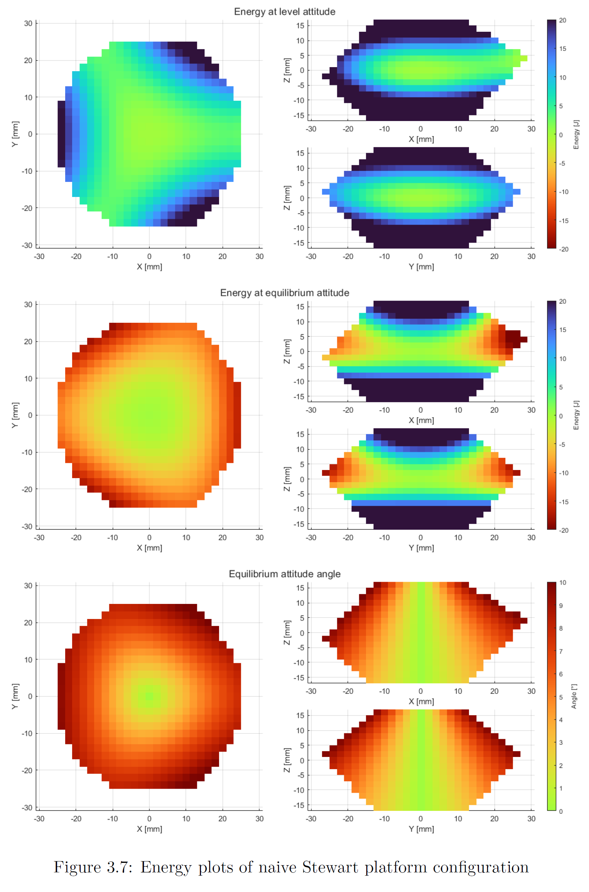
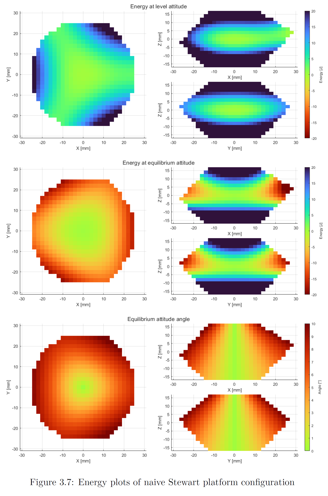
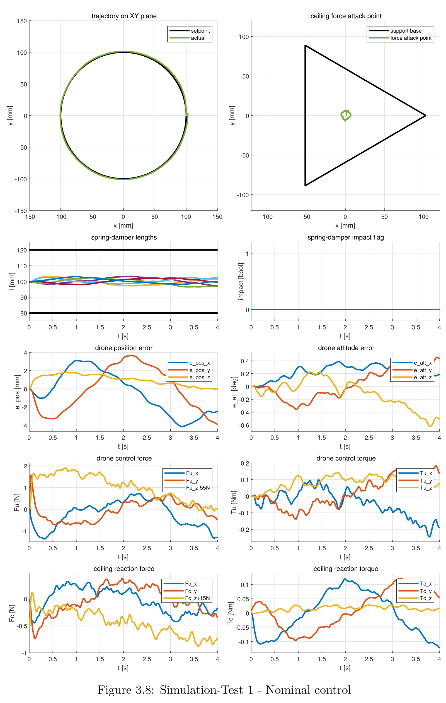
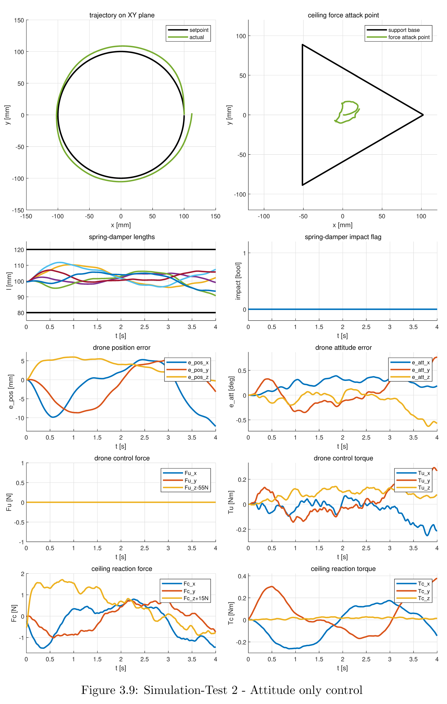
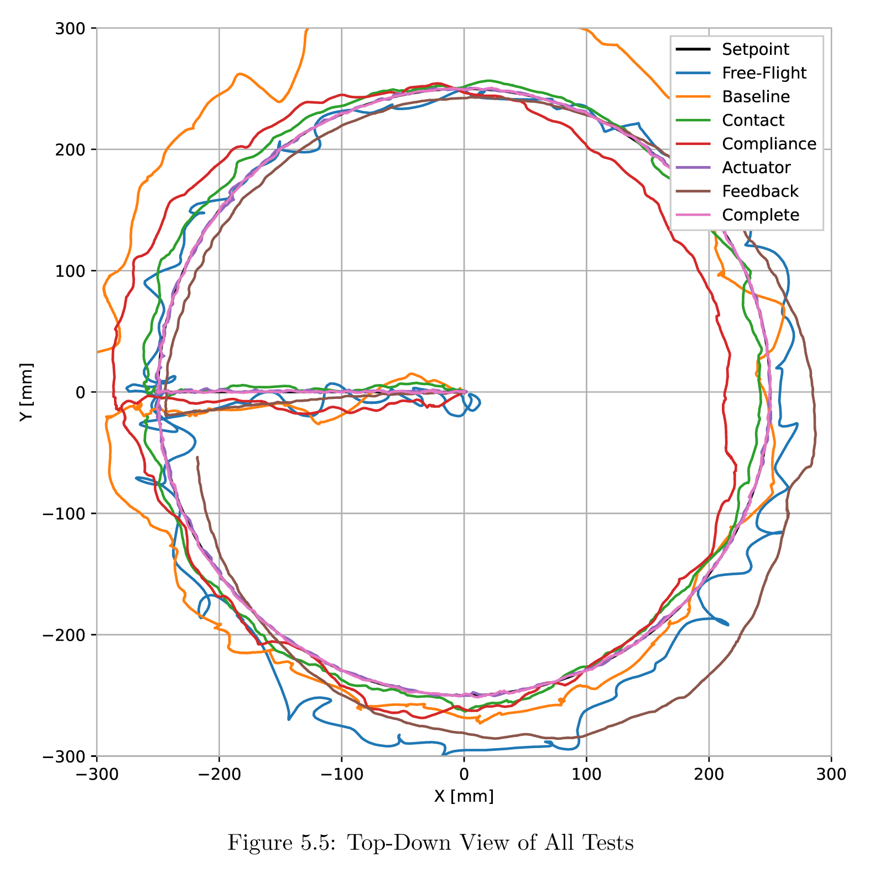
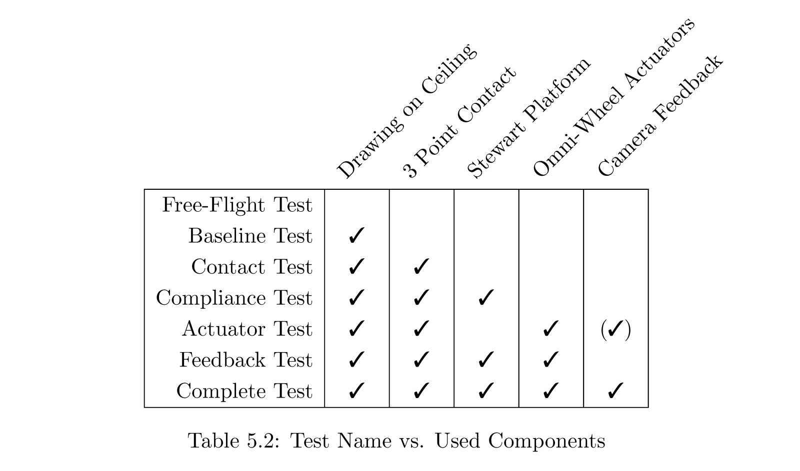
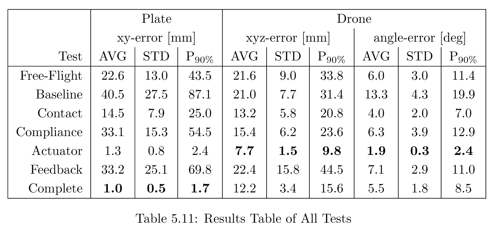

Originally the plan for my master's thesis was to finish development of my coaxial helicopter design (see project). Shortly before the start my supervisors Christian Lanegger and Marco Tognon from the Autonomous Systems Lab (ASL) at ETH Zürich convinced me to take a different project instead: To build an aerial layouting tool prototype for HILTI. HILTI is a construction equipment company interested in a robotic worker that can autonomously draw layouting lines on the ceiling of construction sites. ASL had developed an omnidirectional drone particularly versed in coming into contact with its environment, so my task was to build a tool on top of that drone to precisely draw on a ceiling.
Since the drone on its own was not accurate enough I had to get creative. My tool featured a Stewart platform to add compliance and passive stability at the contact. Omniwheels to be able to push against the ceiling. A camera tracking system to track the relative position of the marker. And a retractable marker to actually do the drawing. The design process included a lot of simulations, optimization and validation, resulting finally in an average drawing error of 1.0mm (SD: 0.5mm), compared to 14.5mm (SD: 7.9mm) of the drone on its own.
After I was done with the project (and somewhat burnt out), my supervisor Christian did a few more testflights and compiled all results in a paper presented at Robotics: Science and Systems 2022 in New York. Furthermore, HILTI was granted a PCT patent for the design.

The Stewart platform consists of six spring-dampers (typically used in radio controlled miniature cars), that connect the drone to a top platform, which then interfaces with the drawing surface. It adds compliance to the layouting tool, so that disturbances from the drone can be compensated. To at the same time gain some passive stability the platform geometry is chosen such that the restoring force/torque of the springs on the drone is maximized. This can be seen by analysing the energy stored in the springs at different poses. The derivative of this energy with respect to the drone pose is proportional to a restoring spring force and it's second derivative proportional to the spring stiffness of this restoring force. The optimal geometry turns out to have a slightly enlarged top platform.

 

Since the availability of the drone for test flights was very limited at the start of the project, I set up a physics simulation environment in MATLAB for the drone and the Stewart platform, to analyse how different controllers on the drone would interact with the passive stability provided by the Stewart platform. This showed for example that in theory attitude control on the drone is sufficient to drag the drone along in its position.
 
Because contact with the ceiling was already intended, it was obvious to try and use this contact to exert forces on the layouter tool to increase accuracy. This was accomplished with three omniwheels actuated by three Dynamixel motors. Omniwheels that are available commercially are all rather heavy, since no one really intends to put them on a flying robot. Heavy wheels are problematic, as any additional weight at the top detracts from the passive stability provided by the Stewart platform. Instead of compromising I chose to build my own based on an existing design, but with lightweight materials: A carbon fibre frame for the hub and aluminium rollers for the secondary wheels. The only drawback was that I had to spend many long hours on the lathe to make all 75 identical little aluminium wheels. But this effort got the weight of a single omniwheel down to 45g, compared to 125g of the reference GTF wheel!


Introducing compliance with the Stewart platform brings with it the disadvantage that now the drone does no longer know where the marker is located. To overcome this problem, a camera was fixed to the drone looking at the top platform, while the top platform was painted with a so called ChArUco board. This enabled the drone to calculate its position relative to the marker, so that, knowing the position of the drone, one could deduce the position of the marker.


The marker itself was spring loaded, such that a constant fore would be exerted when drawing. A flexible wire attached to a servo motor enabled the drone to retract the marker without interfering with the spring when necessary.
To make useful drawings with the layouting tool I implemented a basic parser for G-Code, a format typically used to control CNC machines and plotters. This parser only supports simple commands to turn the marker on/off, draw straight lines and draw arcs. Although, this is enough to draw almost anything, like the ASL logo you can see near the top of this page. Like in real CNC machines, my parser is able to look ahead on its trajectory to start decelerating before sharp direction changes, increasing drawing speed while maintaining accuracy.
To validate my design decisions, I ran a lot of tests replacing each component with a dummy version to measure its influence on the drawing accuracy. These test show that each component does indeed contribute to the final result of an average 1.0mm (SD: 0.5mm) drawing error. Although it also shows that replacing the spring with rigid links only slightly increases the error to 1.3mm (SD: 0.8mm), but makes the layouting tool much simpler, as the tracking camera also becomes redundant
  